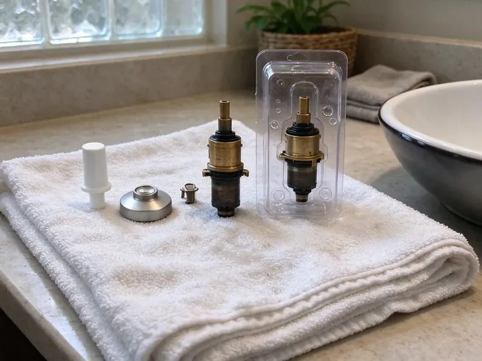

Sink Drain Replacement in Columbus, GA
We cut out rusted stubs and join new PVC on sinks all over Columbus, GA.
- Old Parts Removed
- Licensed Georgia Plumbers
- Matched Finishes
- Flat Up-Front Price
Stopper Will Not Seal in Columbus, GA? Swap the Pop-Up.
Rusty traps do not get better. Have it replaced before it lets go.
A Local Drain Plumber in Columbus, GA
Plastic traps crack, too. Overtightened or bumped PVC traps split at the slip nut, and after that no washer will hold. At that point it gets replaced. It is a short job.
Some of what we do:
- Reconnect disposals and dishwasher drains
- Replace rusted chrome traps with heavy-wall PVC
- Cut back corroded wall stubs to solid pipe

Additional Bathroom Plumbing Services in Columbus, GA
From toilets to showers, our bathroom plumbing team in Columbus, GA handles repairs, installs, and upgrades with tidy, code-compliant work.


Customers
Why Choose HGR Plumbing for Sink Drain Replacement in Columbus, GA?
A new drain should drain faster, not just stop leaking. We remove undersized adapters, size parts correctly, and empty a full bowl to check the flow. A slow new drain points to the vent.
- Tested Seals, Every drain gets a full-bowl test before we leave.
- Local Expertise, We see a lot of galvanized stubs in older Columbus homes and carry couplings for them.
- Code Compliant, Trap seal, slope and slip joint access all meet Georgia code.
Citywide Coverage
Older homes near the center of town get extra attention. Their steel or cast iron arms often crumble, so we carry couplings to cut back to solid pipe. That avoids a second trip.
Experienced Team
Old and new drain materials are routine for us. In one week our crew might cut out galvanized arms in a 1950s house and replace a cracked PVC trap in a new build. Each needs different fittings.
Safety-First Approach
Corroded pipe has sharp edges. Rusted chrome and galvanized steel can tear when we cut or unscrew it, so we wear cut-resistant gloves and keep kids and pets clear of the cabinet while we work. We collect every sharp scrap.
Trusted Certified Columbus Plumbing Services Professionals
At HGR Plumbing, we take pride in licensed, certified plumbing services throughout Columbus, GA. Credentials matter in this trade. Every repair, install and maintenance visit follows strict safety and quality rules, and the plumbers doing the work carry recognized industry credentials.
Call Us Now PHCC Plumbing Contractor Recognition
PHCC Plumbing Contractor Recognition Better Business Bureau (BBB) Accreditation
Better Business Bureau (BBB) Accreditation Angi Certified Pro
Angi Certified Pro ISO 9001 Quality Management Certification
ISO 9001 Quality Management CertificationFrom Strainer to Wall Stub in Columbus, GA
Commercial Lavatory Drain Replacement in Columbus
Public restroom drains take constant use. Offset grid drains and heavy traps go in, with insulated covers where accessibility rules apply. Work can happen after hours. Inspectors get a clean, labeled job.

Corroded Drain Pipe Replacement in Columbus, GA
Galvanized drain arms rust from the inside. In older homes the steel stub coming out of the wall can be so thin at the threads that it crumbles when we put a wrench on it, so we cut it back and tie in new PVC with a shielded transition coupling. We handle cast iron the same way. Sometimes that means opening the wall.
Cost of Sink Drain Replacement in Columbus, GA
Scope sets the price. Bath pop-up and trap swaps cost the least, and kitchen drains or rusted wall stubs cost more. Designer finishes add some. The quote lists each part.
Pop-Up Drain Replacement in Columbus
Lift-rod pop-ups are the most common bath drain. We pull the old body, clean the flange seat down to bare porcelain, reset the new flange in putty or silicone, and adjust the clevis so the lift rod opens and closes the stopper with one easy motion. We match the faucet finish. Overflow-style drains are standard.
Kitchen Sink Drain Replacement in Columbus
Kitchen drains start failing at the basket strainer. Old strainer putty dries out and the locknut rusts, so water runs down the tailpiece and looks like a trap leak. We replace the strainer and trap together. Disposal sinks get a new flange instead.
Utility Sink Drain Replacement in Columbus
Laundry tubs see lint and paint water. Lint and grit wear out thin utility tub drains and pack the trap so it never drains right. We fit a 1-1/2 inch trap with a cleanout. A lint trap on the washer hose helps.
Pop-Up Drain Assembly Replacement in Columbus, GA
A stopper that drops on its own has a worn pivot. The plastic ball on the pivot rod wears flat, the nut that holds it loses its seal, and the rod no longer holds the stopper up, so the sink either will not drain or will not hold water. A new pop-up fixes all of it. Takes about an hour.

Emergency Sink Drain Service in Columbus
A trap that falls apart sends a sink of water into the cabinet. Shut off the faucet, put a bucket under it, and avoid running water elsewhere if another drain is backing up. We send a plumber with trap kits. Most get fixed for good on the first visit.
Finding Drain Replacement Near Me in Columbus, GA
Local plumbers see the same drains over and over. Homes in one subdivision usually share the same builder-grade pop-ups and traps, so we often know what we will find in your cabinet before we open the door. That shortens the visit.
Some drain problems start past the wall. A sink that backs up when the tub drains, or gurgles when the toilet flushes, has a clog or vent issue further down the line, and a new trap alone will not fix it. That gets checked before any quote.
HGR Plumbing at a Glance
- Fully licensed plumbing team covering Columbus, GA
- 24/7 emergency service with same-day scheduling
- Upfront, flat-rate pricing before work begins
- 4.9-star rated by 357+ Georgia customers
Columbus Map
Columbus Information
- Population
- 201,877
- Area codes
- 706/404/478
- Service area
- Columbus and towns within a 40 mile drive
- Nearby
- Warner Robins, Macon, Albany, South Fulton
Homes farther south often draw from deep limestone aquifers, so harder water and the occasional sulfur smell are common complaints there. Older homes also tend to have steel drain stubs, and replacing a worn drain in Columbus, GA stops slow leaks that rot vanity floors.
Expert Services
Call HGR Plumbing for honest, reliable plumbing from people who know the trade in Columbus, GA.
Our Specialized Plumbing Services in Columbus, GA
At HGR Plumbing, you get every kind of plumbing service from one company across Columbus, GA. From leak detection to full system installs, our team works fast and charges fair prices on homes and commercial properties alike. Here are the core services we offer:


How a Drain Replacement Goes in Columbus, GA
A few steps, a written price, and a drain that empties fast.
Tell Us the Problem
Call (770) 470-3778 with what you are seeing. We bring likely parts.
Remove the Old Drain
We take out the old trap and drain body and check the wall stub.
Install and Verify
The new drain goes in and gets a full-flow test with a dry towel under every joint.
Frequently Asked Questions About Sink Drain Replacement in Columbus
Most sink drain replacements cost $150 to $600. Simple trap swaps cost the least, and full assemblies or wall stub repairs cost the most. You get the price before we start.
A plastic trap swap is a reasonable DIY job. Pop-up drains are harder because the flange has to be sealed in putty or silicone without twisting, and rusted wall stubs are best left to a plumber since they can snap off inside the wall. A broken stub means opening drywall.
It can, on metal drains. Scale and the cleaners used on it wear down chrome and thin brass faster. PVC lasts longest.
For in-place replacement, rarely. Under-sink part swaps are repair, while in-wall drain or vent changes usually need a permit. Permits get pulled by us when required.
We do, along with chrome and bronze. Most faucet brands sell a pop-up drain in each faucet finish, so we can match the drain to the faucet exactly, and push-button drains come in the same range of finishes from most makers. Special finishes can take a day.
Every one, in writing. The labor warranty term is printed on your invoice before we start, and it covers any leak or loose part from our work, while the manufacturer covers defects in the drain parts themselves. Callbacks are free.
With a plastic trap, yes. Buy a kit sized to the drain, 1-1/4 inch for bath and 1-1/2 inch for kitchen, line it up so nothing pulls sideways, and hand-tighten the slip nuts plus a quarter turn rather than reaching for pliers. Rusted metal arms are harder.
On a newer drain, just the part. Older chrome or thin brass drains tend to fail joint by joint, so a full replacement is cheaper in the long run. You get both prices.
What Our Customers Say About Our Plumbing Experts

Sofia M.
Two new toilets went in during one visit. The tech set them on new wax rings and swapped the old supply lines. He also noticed our bathroom faucet dripping and replaced the cartridge while he was there. No mess left behind.
Toilet Installation · Warner Robins, GA
Nathan E.
Our tankless heater kept throwing an error code and shutting off mid shower. The tech flushed the heat exchanger, which was full of scale, and replaced a bad flow sensor. Hot water has been steady for half a year now.
Water Heater Repair · Albany, GALaura S.
Our 40 gallon tank started leaking from the bottom after thirteen years. The tech hauled the old one out, set a new unit with a fresh expansion tank, and had hot water running in about four hours. He took the old tank with him too.
Water Heater Replacement · South Fulton, GA
Patricia H.
We had a slab leak that two other companies could not find. HGR Plumbing located it in under an hour with a listening device. They rerouted the line through the attic instead of breaking up the floor, so we kept our kitchen tile.
Slab Leak Repair · Stonecrest, GAKaren W.
After our third pinhole leak in copper, we stopped patching. HGR Plumbing gave us a written plan room by room and repiped the house in PEX while we stayed in it. The crew covered our floors every morning and cleaned up every night.
Repiping · Stonecrest, GA
Kevin O.
Before buying our house I paid for a sewer camera inspection. HGR Plumbing found a belly in the line that held standing water about forty feet from the cleanout. We used the video to get the sellers to fix it before closing.
Sewer Camera Inspection · Albany, GA